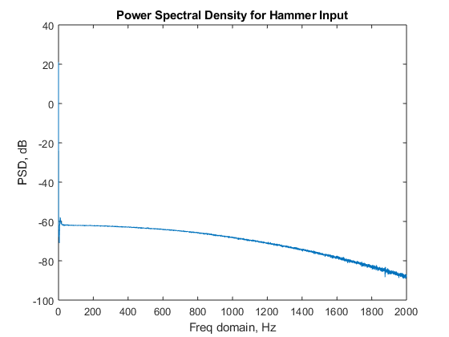

Contents
clc; close all; clear all;
load case files collected at 11 location points and extract mode shapes from vtoolbox
figure()
load case_1.mat
H1 = Hf_chan_2;
plot(Freq_domain,20*log10(abs(Hf_chan_2)))
load case_2.mat
H2 = Hf_chan_2; hold on
plot(Freq_domain,20*log10(abs(Hf_chan_2)))
load case_3.mat
H3 = Hf_chan_2; hold on
plot(Freq_domain,20*log10(abs(Hf_chan_2)))
load case_4.mat
H4 = Hf_chan_2; hold on
plot(Freq_domain,20*log10(abs(Hf_chan_2)))
load case_5.mat
H5 = Hf_chan_2; hold on
plot(Freq_domain,20*log10(abs(Hf_chan_2)))
load case_6.mat
H6 = Hf_chan_2; hold on
plot(Freq_domain,20*log10(abs(Hf_chan_2)))
load case_7.mat
H7 = Hf_chan_2; hold on
plot(Freq_domain,20*log10(abs(Hf_chan_2)))
load case_8.mat
H8 = Hf_chan_2; hold on
plot(Freq_domain,20*log10(abs(Hf_chan_2)))
load case_9.mat
H9 = Hf_chan_2; hold on
plot(Freq_domain,20*log10(abs(Hf_chan_2)))
load case_10.mat
H10 = Hf_chan_2; hold on
plot(Freq_domain,20*log10(abs(Hf_chan_2)))
load case_11.mat
H11 = Hf_chan_2; hold on
plot(Freq_domain,20*log10(abs(Hf_chan_2)))
xlabel('Freq domain, Hz');ylabel('FRF, dB')
title('FRF')
Power Spectral Density for Input Hammer
load case_2.mat
figure
plot(Freq_domain,20*log10(abs(PSD_chan_1)))
xlabel('Freq domain, Hz');ylabel('PSD, dB')
title('Power Spectral Density for Hammer Input')
TF = [H1,H2,H3,H4,H5,H6,H7,H8,H9,H10,H11];
f = Freq_domain;
[z1,nf1,u1]=mdofcf(f,TF,34.06-5,34.06+5);
[z2,nf2,u2]=mdofcf(f,TF,211.9-5,211.9+5);
[z3,nf3,u3]=mdofcf(f,TF,595-1,595+1);
[z4,nf4,u4]=mdofcf(f,TF,1158-0.2,1158+0.2);
[z5,nf5,u5]=mdofcf(f,TF,1901-0.2,1901+0.2);
Warning: Rank deficient, rank = 4, tol = 3.177783e+01.
Warning: Rank deficient, rank = 2, tol = 6.684570e-04.
Warning: Rank deficient, rank = 4, tol = 1.187149e+03.
Warning: Rank deficient, rank = 2, tol = 6.684570e-04.
Warning: Rank deficient, rank = 4, tol = 1.066875e+03.
Warning: Rank deficient, rank = 2, tol = 7.629395e-05.
Warning: Rank deficient, rank = 4, tol = 9.277002e+02.
Warning: Rank deficient, rank = 2, tol = 1.752012e-05.
Warning: Rank deficient, rank = 4, tol = 2.500203e+03.
Warning: Rank deficient, rank = 2, tol = 1.752012e-05.

Mode shapes
figure
plot(1:11,u1,'LineWidth',5)
hold on
plot(1:11,u2,'LineWidth',5)
hold on
plot(1:11,u3,'LineWidth',5)
hold on
plot(1:11,u4,'LineWidth',5)
hold on
plot(1:11,u5,'LineWidth',5)
legend('mode shape 1','mode shape 2','mode shape 3','mode shape 4','mode shape 5')
title('Mode Shapes of Cantilever Beam')
Warning: Imaginary parts of complex X and/or Y arguments ignored
Warning: Imaginary parts of complex X and/or Y arguments ignored
Warning: Imaginary parts of complex X and/or Y arguments ignored
Warning: Imaginary parts of complex X and/or Y arguments ignored
Warning: Imaginary parts of complex X and/or Y arguments ignored
Modal Assurance Criterion for Test-Test data
U = [u1 u2 u3 u4 u5]
for i=1:5;
for j=1:i;
MAC(i,j) = (abs(U(:,i)'*U(:,j)))^2 / ((U(:,i)'*U(:,i))*(U(:,j)'*U(:,j)));
end
end
MAC
figure
bar3(MAC)
title('Test-Test data, Modal Assurance Criterion', 'fontweight','bold', 'fontsize',16)
set(gca,'XTickLabel',[34.06 211.9 595 1158 1902])
set(gca,'YTickLabel',[34.06 211.9 595 1158 1902])
U =
11×5 single matrix
1.0e+04 *
Columns 1 through 4
-0.0020 - 0.0000i 0.0299 - 0.0000i -0.1333 + 0.0000i 0.3943 - 0.0000i
-0.0200 - 0.0000i 0.2670 - 0.0000i -1.0434 + 0.0000i 2.2602 - 0.0002i
-0.0586 - 0.0000i 0.5624 - 0.0001i -1.6069 + 0.0000i 3.0567 - 0.0002i
-0.1140 - 0.0000i 0.8167 - 0.0001i -1.9543 + 0.0000i 1.2871 - 0.0001i
-0.2125 - 0.0000i 1.1446 - 0.0001i -1.1813 + 0.0000i -2.0296 + 0.0002i
-0.1881 - 0.0000i 1.0401 - 0.0001i -0.0488 + 0.0000i -2.4880 + 0.0002i
-0.2778 - 0.0000i 0.7703 - 0.0001i 0.9630 - 0.0000i -1.2187 + 0.0001i
-0.2386 - 0.0000i 0.3097 - 0.0000i 0.9834 - 0.0000i 0.6152 - 0.0000i
-0.4779 - 0.0000i 0.0674 - 0.0000i 1.4505 - 0.0000i 2.4235 - 0.0002i
-0.6666 - 0.0000i -0.6162 + 0.0001i 0.0213 - 0.0000i 1.3790 - 0.0001i
-0.5832 - 0.0000i -1.4958 + 0.0002i -2.5259 + 0.0000i -2.7239 + 0.0002i
Column 5
-0.6565 + 0.0000i
-4.8318 + 0.0003i
-2.4093 + 0.0002i
2.5181 - 0.0001i
4.7784 - 0.0003i
-0.0355 + 0.0000i
-4.5340 + 0.0003i
-0.9905 + 0.0000i
1.8403 + 0.0000i
3.5012 - 0.0002i
-3.7293 + 0.0002i
MAC =
5×5 single matrix
1.0000 0 0 0 0
0.0183 1.0000 0 0 0
0.0309 0.0040 1.0000 0 0
0.0010 0.0042 0.0077 1.0000 0
0.0026 0.0281 0.0131 0.0001 1.0000